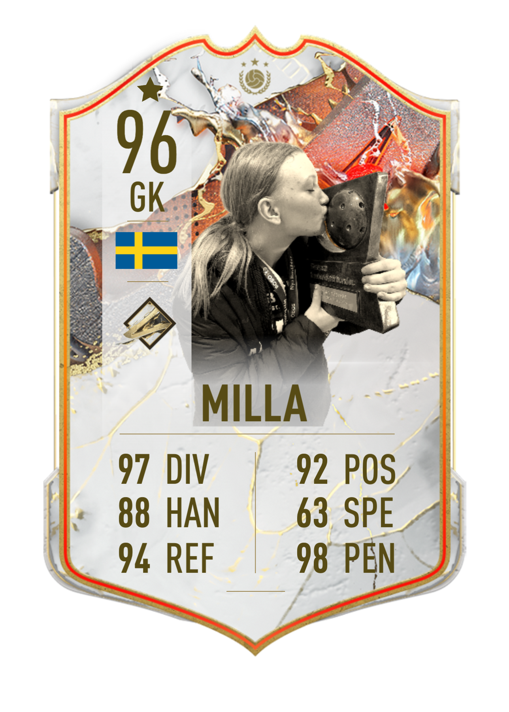

Milla
AKA junior
ps: Detta är väldigt seriöst dock
ps: Detta är väldigt seriöst dock
Milla är född 2007 och bytte till Täby FC inför säsongen 22/23. Milla gick ur grundskolan våren 2023 och började
därefter gymnasiet till hösten 2023 på Tibble gymnasium på linjen ekonomi. I samband med skolan går hon även NIU
(Nationell Idrotts Utbildning) med innebandy inriktning.
På fritiden så tränar Milla mycket innebandy och en del gym. När hon inte gör något av detta så brukar hon spela
datorspel, plugga, kolla serier eller umgås med kompisar. Ett annat intresse Milla har är motorcyklar och håller på
att ta A1-körkort (lätt mc).
Till skillnad från Max så tycker inte Milla om programmering eller något tekniskt utan hon är mer intresserad av design
och framförallt när det kommer till hus. Hon har trots allt över 1000 timmar på SIMS 4 där allt hon gör är att bygga och
inreda hus.
Milla likaväl som Max är bra på straffar. Även om milla inte är sitt lags bästa straffmålvakt har hon ungefär lika bra räddningsstatistik med en insläppt på 12 straffar. Videon visar en straffräddning från några år sedan i Kalmarsund cup.
Milla samma som Max började sin karriär i Vallentuna IBK år 2013 och spelade där till säsongen 21/22. Milla bytte
därefter i samband med den nya säsongen till Täby FC DJ trupp och spelade i JAS. Milla har redan från början varit
målvakt och har därmed 10 års erfarenhet i ryggen.
I år så spelar hon både JAS och D1 med EFUT (Elitförberedande Utbildning) FU18 som slussar upp spelare i Dam-U
(B-laget) som spelar i dam allsvenskan.
Milla har till skillnad från max ett längre CV med priser. Förra säsongen vann Milla USM, BIS (Bäst I Stan) samt
att hon gick till innebandyfesten i JAS. Millas bästa säsong ännu är 22/23 där de gick oslagna under gruppspelet i
JAS.

EFUT FU18 som Millas lag heter är ett Elitförberedande spår för få det bästa möjligheterna att nå SSL.
FU18 kör i serierna BIS, JAS, DJ1 och D1 och skickar ner spelare som kan behöva mer speltid till DJ2 och DJ3.
Vissa får även gå upp och köra Dam Allsvenskan
EFUT är ett nytt koncept för i år för att ge de spelare som verkligen vill satsa på sin innebandy chansen från
junior nivå.
I tidigt september så kördes bäst i stan (DM) gruppspelet och Täby gick vidare som gruppledare till slutspel där de
kommer möta JB i november. FU18 kommer även att skicka iväg några spelare till SDF-SM i umeå för att representera Stockholm.

Millas framtidsplaner och drömmar precis som Max är att nå SSL och ett utav lagen som hade varit en dröm är Pixbo. Detta betyder inte att han tackar nej till andra lag men i en perfekt värld där man har möjlighet att välja så hade han valt antingen Pixbo Wallenstam eller Kalmarsund FBC